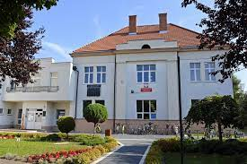
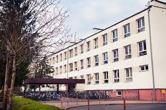
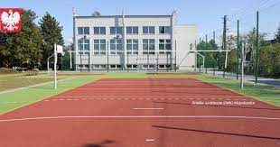
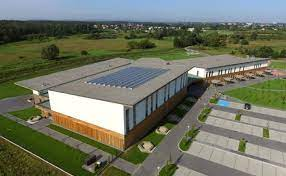
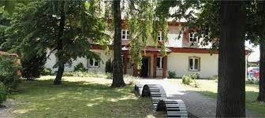

Szkoła Podstawowa nr 1 im. Tadeusza Kościuszki w Niepołomicach
ul. Szkolna 3, 32-005 Niepołomice
Kontakt:
Telefon: 12 281 11 54
Strona internetowa: www.sp1niepolomice.pl
E-mail: sekretariat@sp1niepolomice.pl
Dyrektor szkoły: dyr. Grzegorz Harabasz

Opis oraz inne:
Zajęcia dodatkowe: plastyczne, matematyczne, muzyczne, wyrównawcze, korekcyjno-kompensacyjne,
plastyczne, Koło aktywnego czytelnika, Koło reporterów, Teatr szkolny, Podróże w czasie w przestrzeni.
Szkoła Podstawowa nr 2 im. Króla Kazimierza Wielkiego w Niepołomicach
ul. 3 Maja 23, 32-005 Niepołomice
Kontakt:
Telefon: 122 811 085, 122 813 248
Strona internetowa: www.sp2niepolomice.pl
E-mail:sekretariat@sp2.eduniepolomice.pl
Dyrektor szkoły:dyr. Alina Jachimczak

Opis oraz inne:
Szkoła oferuje koła zainteresowań: polonistyczne, matematyczne, przyrodnicze, teatralne, informatyczne i plastyczne.
Koło Misyjne oraz Uczniowski Klub Wolontariatu. Prężnie funkcjonuje Samorząd Uczniowski oraz grupa teatralna Scena Apollo dla uczniów z klas IV-VIII.
Uczniowie mogą korzystać z zajęć rozwijających twórczość i kreatywność oraz programowania przez zabawę w ramach projektu unijnego Centrum Mistrzostwa Informatycznego.
Uczniowie mogą też brać w udział w zajęciach robotyki i projektowania modeli 3D, pracują z klockami, zestawami kreatywnymi i drukarkami 3D.
Nauczyciele realizują innowacje pedagogiczne z zakresu programowania, plastyki, literatury, zdrowego stylu życia; prowadzą zajęcia dydaktyczno-wyrównawcze, rewalidacyjne, korekcyjno-kompensacyjne i terapeutyczne.
W ofercie szkoły znajdują się również dodatkowe zajęcia sportowe i edukacyjne. Uczniowie osiągają wysokie miejsca w konkursach przedmiotowych, artystycznych i zawodach sportowych.
W szkole funkcjonuje biblioteka z bogatym księgozbiorem, świetlica sprawująca opiekę nad dziećmi w godz. 7.00-17.00 oraz stołówka szkolna, w której posiłki są przygotowywane na miejscu.
Szkoła Podstawowa nr 3 im. Włodzimierza Puchalskiego w Niepołomicach
ul. Krakowska 14, 32-005 Niepołomice
Kontakt:
Telefon: 122 811 051
Strona internetowa: www.sp2niepolomice.pl
E-mail:zsp.niep@gmail.com
Dyrektor szkoły:dyr. Zbigniew Stawarz

Opis oraz inne:
Szkoła działa w Zespole Szkolno-Przedszkolnym, gdzie również znajduje się Przedszkole Samorządowe nr 2.
Organizowane są różnorodne zajęcia pozalekcyjne, np. tenisa ziemnego. Szkoła dysponuje bogatą bazą sportową – salą gimnastyczną i nowoczesnym, wielofunkcyjnym boiskiem.
Wdrażanych jest wiele innowacji pedagogicznych, m.in.: „Szkoła Pitagorasa”, „Niemiecki na start”, „Zamigani”.
Projekty ogólnopolskie realizowane w szkole: „Szkoła Demokracji”, „Ja w społeczeństwie”, „Jak mogę zmienić świat”, „Program nauki zachowania”, „Wychowanie przez czytanie”, „Czytam z klasą – lekturki spod chmurki”.
W roku szkolnym 2020/2021 szkoła wygrała tysiąc książek do biblioteki w konkursie Empiku „1000 powodów, by czytać”.
Społeczna Szkoła Podstawowa im. Lady Sue Ryder
os. Kaptarz 40, 32-005 Niepołomice
Telefon: 570 455 075
Strona internetowa: www.sueryder.pl
E-mail:szkola@sueryder.pl
Dyrektor szkoły:dyr. Marcin Słoczyński💀

Opis oraz inne:
Organem prowadzącym szkołę jest Stowarzyszenie im. Lady Sue Ryder w Niepołomicach.
Szkoła prowadzi klasy sportowe (specjalizacja: siatkówka i piłka nożna).
Zajęcia dodatkowe: sportowe (siatkarskie, wspinaczkowe, podróżnicze), artystyczne (plastyczne, malarskie, teatralne), archeologiczne, warsztaty językowe, Odyseję umysłu oraz muzyczne (chór Sue Ryder).
Oferuje wsparcie pedagogów i logopedy.
Placówka oferuje naukę w monitorowanym, nowoczesnym, klimatyzowanym budynku. Ekologiczny budynek ma farmę fotowoltaiczną, zlokalizowany jest w bezpośrednim sąsiedztwie Puszczy Niepołomickiej.
W sali gimnastycznej usytuowana jest sztuczna ściana wspinaczkowa o powierzchni 120 mkw., z kilkunastoma drogami wspinaczkowymi o zróżnicowanym stopniu trudności.
Zespół Państwowych Szkół Muzycznych im. Mieczysława Karłowicza w Krakowie
Filia w Niepołomicach | ul.Piękna 1, 32-005 Niepołomice
Telefon: 122 811 204,501 737 472
Strona internetowa:niepolomice.zpsmuz.pl
E-mail:zpsmuz.niepolomice@interia.pl
Dyrektor szkoły:kierownik filii: Mirosław Stępień

Opis oraz inne:
Prowadzi edukację w dwóch cyklach nauczania: sześcioletnim – do którego przyjmowani są kandydaci w wieku 6-10 lat, czteroletnim – do którego przyjmowani są kandydaci w wieku 8-16 lat.
Uczy gry na następujących instrumentach: trąbka, flet, akordeon, gitara klasyczna, fortepian, skrzypce, saksofon, wiolonczela
Młodzieżowe Centrum Kariery
ul. Bocheńska 26, 32-005 Niepołomice
Telefon: 123 858 246
Strona internetowa:mck.niepolomice@ohp.pl
E-mail:zpsmuz.niepolomice@interia.pl
Opis oraz inne:
Udziela pomocy w planowaniu edukacji ponadgimnazjalnej, ścieżki zawodowej, prowadzi pośrednictwo pracy stałej i krótkoterminowej,
pomaga w sporządzaniu dokumentów aplikacyjnych, organizuje szkolenia i kursy zawodowe.
Akademia Kreatywności KREOŚ
ul. Ułanów 29, Niepołomice
Telefon: 534 048 369
Strona internetowa:www.kreos.edu.pl
Facebook:www.facebook.com/akademiakreos
E-mail:akademiakreos@gmail.com
Opis oraz inne:
Prywatna świetlica edukacyjna oferująca płatne zajęcia dodatkowe i kreatywne urodziny dla dzieci w wieku 5-12 lat